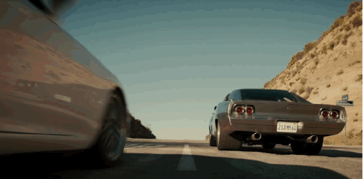

Introduce
Paul William Walker IV[2] (September 12, 1973 – November 30, 2013) was an American actor who began his career guest-starring in several television shows such as The Young and the Restless and Touched by an Angel. Walker gained prominence with breakout roles in coming-of-age and teen films such as She's All That and Varsity Blues. In 2001, Walker gained international fame for playing Brian O'Conner, one of the lead protagonists in the street racing action film The Fast and the Furious, and would reprise the role in five of its six sequels. He was also in films such as Eight Below, Timeline, Into the Blue, Joy Ride and Running Scared. Outside of acting, Walker was the face of The Coty Prestige fragrance brand Davidoff Cool Water for Men, and starred in the National Geographic Channel series, Expedition Great White. He also founded the charity Reach Out Worldwide (ROWW), an organization providing relief efforts for areas affected by natural disasters.
Walker died in a single-car accident on November 30, 2013, alongside friend Roger Rodas. Three of his films were released posthumously: Hours, Brick Mansions, and Furious 7, which was released on April 3, 2015 in the United States and the United Kingdom. The song "See You Again" by Wiz Khalifa from the Furious 7 soundtrack was a tribute to Walker.
Recent Comments
See you again in heaven
Film History
- 2015 -
Furious 7
- 2014 -
Brick Mansions
- 2013 -
Hours
Fast & Furious 6
- 2012 -
Fast Five
admin:
admin:
admin: